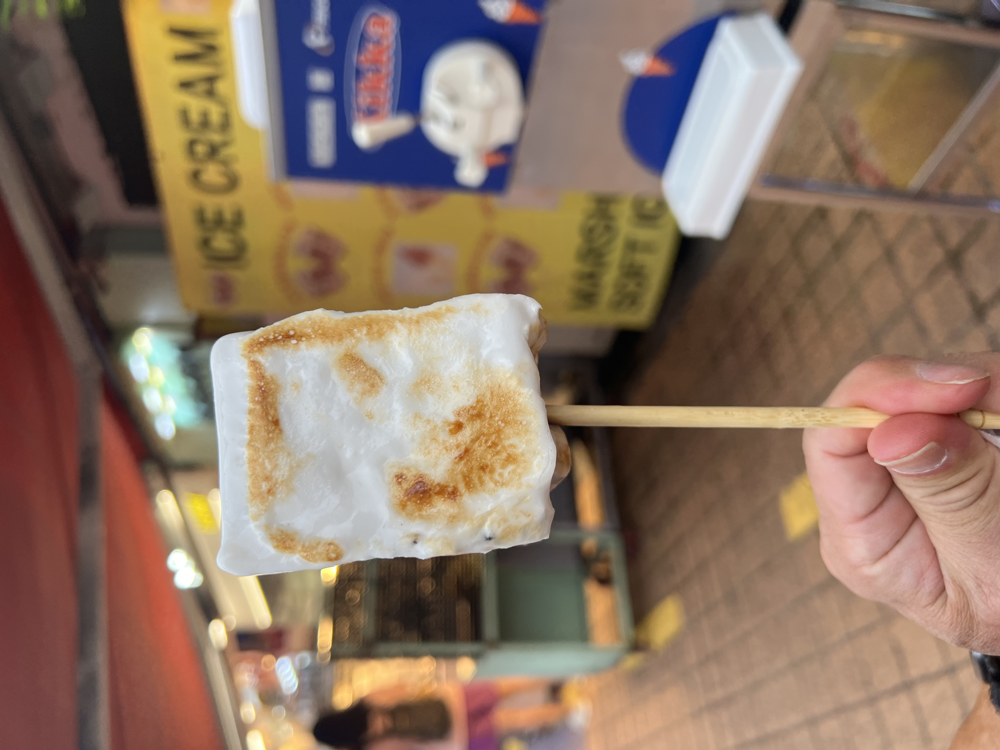

Vietnam D4
Woke up today late… oops. I was supposed to get up at 7 to get and get ready to get bánh cuốn with Phine and Hieu at 8
but I got up at 8:30. So instead, they brought bánh cuốn to Cat Linh instead. So I got to Cat Linh and ate there.
LeuLeu Accessorize
77F P. Đặng Văn Ngữ, Trung Tự, Đống Đa, Hà Nội, Vietnam
ZIOHAIR Nguyễn Hy Quang
69 P. Nguyễn Hy Quang, Chợ Dừa, Đống Đa, Hà Nội, Vietnam
Then, Phine, Co Nhung, and I went out and bought some accessories and bathing suit fit which were really cute at this
accessories place called LeuLeu Accessorize. Then, we were on our way to the hair salon. I wanted to ge my hair permed
and cut, but they couldn’t do that on the leftover bleached parts of my hair cause it was still too weak. So instead,
they went and redid my bleached parts, but ended up putting the dye all the way to my roots which I didn’t really want.
They ended up doing a blue like last time, but this one is a deeper and darker blue colour which I liked. And then after
the dye they washed it out and did treatment, and then cut my hair. This ended up taking like I think 3 hours for me,
3.5 ish. I had a sữa chua đánh đá while getting my hair done, it was okay.
Lotte Mall Westlake Hanoi
272 Đ. Võ Chí Công, Phú Thượng, Tây Hồ, Hà Nội, Vietnam
Afterwards, I went back to the hotel to go to Lotte in Tay Ho with Jon and Dad at 2:30. We went there, walked around.
Jon got a top and I got some shoes for the gym. We then stopped in Starbucks so Dad could get Mom some tumblers. And
then we were done at around 4:30. So, cause we had time before dinner, I decided to go to one of the cafes I had down on
my map out of the hundreds I have marked down.
The Little Plan café - Kế Hoạch Nhỏ café
11 Phủ Doãn Hà Nội Hanoi City, 110212, Vietnam
I ended up picking one close-ish to Hoan Kiem called The Little Plan, and took a taxi there. The cafe was really nice,
it was easy to find by just walking down the alley a bit and going up the stairs. The door needs a little push to get in
for sure, but the vibes were so nice. There was a little upstairs seating, outside seating, and the first floor. When I
entered, they just baked fresh cookies which added more to the vibes. I went and ordered a croissant and a lemon jasmine
iced tea. I then went up and added to my typing and caught up a bit. Typing was quite hard with my nails, but I’ll live.
The croissant came with condensed milk which was good, and the tea was also good. Yeah, the vibes here were really nice,
would totally come back.
The Little Plan café - Kế Hoạch Nhỏ café
25 P. Trần Bình Trọng, Trần Hưng Đạo, Hoàn Kiếm, Hà Nội, Vietnam
After, I went back to Cat Linh so we could leave to go to Brazilian. It took some time, but we finally got there and had
dinner. Ate a lot of meat, it was nice being back. Then I went back to Cat Line to chill and hang out a little with
Opal. Then at 9:30, I went back to the hotel. I was going to just check out the gym, but it was a lot nicer than I
thought. There were cables and leg machines and dumbbells that I actually ended up just hitting glutes and a bit of abs.
I was sweating so much though. Then I went back to the room and that wraps up today.
A full day but very fun, and I’m happy I was able to get alone time to just do my thing at a place I chose to go.
Vietnam D3
Highlands Coffee Pullman
40 P. Cát Linh, Cát Linh, Đống Đa, Hà Nội 100000, Vietnam
Woke up today and got ready. Phine and I walked to Highlands Coffee by Pullman which I’ve been meaning to go to. We got
to see Mom and one now her friends. There, I ate xôi that Hieu got for us, but I had to push all of the nuts to the
side. I got kumquat juice to drink which was really good and refreshing. Then I just mainly chilled there, typing away
and on my one as the others talked.
Hanoi Hotel
2RHC+4HG D8, P. Giảng Võ, Giảng Võ, Ba Đình, Hà Nội 10000, Vietnam
Pha Coffee
101 P. Trần Huy Liệu, Giảng Võ, Ba Đình, Hà Nội, Vietnam
Then, we went to lunch at Hanoi Hotel. It was just all of us and Mincu, and we had dimsum. I miss the old layout of how
they used to do dim sum Sundays at Hanoi Hotel though. Before we headed to the airport, we stopped by a cafe where Hieu
was. I got an iced orange peach tea with lemongrass that was good. Then we went to the airport and got Jon and said
goodbye to Mincu. Then back to Cat Linh we went to get our nails done.
Quyến Nails
27 P. Cát Linh, Cát Linh, Đống Đa, Hà Nội, Vietnam
I sat in the nail store from 4 to 6:30, whew, it took a while. Co Nhung got us some bubble tea while we waited for our
nails to be done. I think this is the coolest set that I’ve gotten, with all of the charms added on. It already is a
pain to type with them though, some sacrifices gotta be made though.
Ashima Giang Văn Minh
60 P. Giang Văn Minh, Đội Cấn, Ba Đình, Hà Nội 100000, Vietnam
Angelina Cocktail Bar - Whisky Lounge - Restaurant
56 P. Lý Thái Tổ, Tràng Tiền, Hoàn Kiếm, Hà Nội 100000, Vietnam
We then went to a hot pot place after for some dinner with Phuong Linh. It was a mushroom based hot pot, which tasted
fine to me. I just had beef the entire night. Then, we went back to Cat Linh to drop off Phuong Linh and headed to the
Metropole for some. Night-time drinks and dessert at Angelina. We all ordered this cocktail called Feeling Golden, which
had pineapple juice, passion fruit puree, honey-ginger syrup, and lemongrass. I really liked this drink, it is like a
combo of everything refreshing that I like in one. In addition, I also ordered truffle fries and a dessert called
extravaganza chocolate which contained chocolate and vanilla ice cream and brownie. The fries were good, the dessert was
okay, not my favourite to be honest.
We then headed back and I came back to the hotel and got ready to sleep. I really enjoyed going back to Highlands
Coffee, I need to stop by again before leaving for sure. I like the pastries they have and the drinks, and it is a chain
which is nice.
Vietnam D2
Phờ Hồ Lợi
3RP4+XF8, Ngh. 209/22 An Đ. Vương, Phú Thượng, Tây Hồ, Hà Nội, Vietnam
Lotte Mall Westlake Hanoi
272 Đ. Võ Chí Công, Phú Thượng, Tây Hồ, Hà Nội, Vietnam
Woke up today at Co Xuan’s apartment wooooo. Went and got ready and ended up having pho for breakfast. I got phở chín
for breakfast and ate that up in like 1 minute. Gobbled it all down. Phine and I then went to Lotte in Tay Ho, the one
that was finally built after like 10 years. There, we walked around, and went to some stores. I got a drink from this
one place called TEAZY. I got their mango peach magic drink, and Phine got their pandan drink (green rice bubble). We
took some pics in the photobooth and then went to do laser hair removal.
Le Club Bar
15 P. Ngô Quyền, Tràng Tiền, Hoàn Kiếm, Hà Nội, Vietnam
After that, Phine and I went to meet up with Co Lan and one of Mom’s friend in the Metropole hotel for high tea. We
spent a good hour and a half there and had some snacks and pastries. Their scones were really good, I had 2 with their
butter and jam and it was yummy. I also liked the cream puff they had and the fresh mango. For drinks, I got a drink
under their detox tea. I kept trying to find out the name directly but I can’t find the drinks menu online, but I
basically got a kumquat, lemongrass, ginger drink with jasmine tea. Whatever the combo actually was, it was really,
really good I wouldd totally get it again.
Then, we went back to Cat Linh where I was able to see Opal. Baby is so big and fat and I miss her. We went and rested
before going to the old quarter and Hoan Kiem at 6:30 with Hieu.
Old Quarter Ta Hien Corner
2VM2+VVM, Tạ Hiện, P. Lương Ngọc Quyến, Hàng Buồm, Hoàn Kiếm, Hà Nội 100000, Vietnam
Cơm Rang Đức Hạnh
38 P. Mã Mây, Hàng Buồm, Hoàn Kiếm, Hà Nội, Vietnam
THE SNOW Hoàn Kiếm (더 스노우 호안끼엠점)
11 P. Hàng Chĩnh, Phố cổ Hà Nội, Hoàn Kiếm, Hà Nội, Vietnam
We went out and hailed over a taxi which took some
time, and we walked around. We looked through some shopping stuff, but mainly walked around and stopped in International
street where we sat to the side and vibed. I got a coke and we had some sausages and chilled.
We then walked to go and get fried rice, and we sat there and ate for a bit. Watched some basketball in the TV, Hanoi
Buffalos against Saigon Heat. We won woooo. After that, we went and walked to bingsu. We got a mango bingsu and I got a
yogurt smoothie, and it was good.
Then just like that, we were on our way back for the day. Phine and I slept at Grandma's house tonight so I got to see
my Opal.
Korea D6 + Vietnam D1
Woke up and basically just went to the airport. There, we checked in and did everything but were lowkey running a little
on time so we couldn’t go to the lounge. Instead, I went to Starbucks and tried one of their drinks. I got the Jeju
Hassaku Grapefruit Honey Blended. It was good, tasted fresh which was nice. We then got to the airplane and were on our
way. I fell asleep for probably like 45 minutes on the plane.
Pullman Hotel
Str Entrance, 40, 61 P. Giảng Võ, Hà Nội 010000, Vietnam
Quán Ăn Ngon
18 P. Phan Bội Châu, Cửa Nam, Hoàn Kiếm, Hà Nội 111103, Vietnam
Oleoleo Coffee Books & Cats
63 P. Trúc Bạch, Trúc Bạch, Ba Đình, Hà Nội, Vietnam
Once we landed, we were picked up and went back to the hotel and then went and got food at Quán Ăn Ngon. I got bún chả
like always, sữa chua đánh đá, and trà thạch trân châu which was also good. Afterwards, me, Phine, Mincu, and Phuong Linh
went to a cat cafe called Oleleoe Books and Cat. They have multiple locations but we just went to one closer. Inside, I
really liked the vibes, and the cats were so chill and nice. It doesn’t feel like your typical cat cafe which I liked,
it was kind of like a cafe that happened to have cats. I got a matcha drink which just tasted like matcha milk tea, and
we vibed the entire time.
Hanoi Hotel
2RHC+4HG D8, P. Giảng Võ, Giảng Võ, Ba Đình, Hà Nội 10000, Vietnam
Afterwards, I went and got my facial done, which took a little while. Then we went and ate at Hanoi Hotel. We got food
for dinner, and that was good. Then we ended up going to Co Xuan’s apartment for the night. There, I got to meet Đậu for
the first time, and see Khoai again. I played with them and got ready for sleep and ended up sleeping at like 1 am.
For recommendations, I really liked the cat cafe, so I would totally say to stop by there for good vibes to read or do
whatever.
Korea D5
Gwangjang Market
88 Changgyeonggung-ro, Jongno District, Seoul
Rahhhh last full day in Korea. I woke up today getting ready and taking the subway to go see Ms. Shim. Mom and Dad went
to do a tour to see the DMZ today so I was just gonna vibe and do my own little things. I went and met up with Ms. Shim,
where we went to the Gwangjang Market. We went and we had some traditional food inside and just chatted. First, we got
this twisted donut that was coated in sugar, and then this like sweet pancake that had sesame and honey in it. Both were
good, my favorite was probably the donut though, it was sweet and nice and chewy kind of like a mochi type of dough. We
then went and had some of the traditional savory Korean pancakes that had bean sprouts and mung beans in them. While
also having some sparkling rice wine. I don’t tend to love mung beans, but the pancakes were really good and filling
too. They were also gluten free and vegan. The rice wine though was not my favourite, I didn’t like how it was sparkling
which lowkey threw me off.
Sulbing
42 Teheran-ro 1-gil, Gangnam District, Seoul
Then, we went and took a bus to Gangnam where we went and got bingsu. We went to this chain called Sulbing, and we were
going to get this blueberry yogurt bingsu, but it was already sold out. According to Ms. Shim, it was a very popular and
trendy flavor lately in Korea. Instead, we got half mango cheese bingsu and half soybean powder. They were both good,
but I don’t eat any of the cheese cause I don’t like it. There was some yogurt on top of the mango bingsu too which was
good. The mango was like chilled, kind of like frozen which was new to me cause usually I always had fresh fruit on the
bingsu. We then walked through Gangnam station a bit, and then we said goodbye and went our separate ways.
Love Lock of Namsan Tower
Yejang-dong, Jung District, Seoul
Paik's Coffee Myeongdong Jungang Ucheguk
58-1 Namdaemun-ro, Jung District, Seoul
I then took the subway back to the hotel where I met up with Mom and dad who had finished their tour early. We went and
took their tour bus to the cable car where we could go see the love lock bridge and the Seoul tower. We had to wait a
while to go up the cable car. When we got up we jsut took some pics and went to the gift store, but that was kind of it.
We then went on the way down and then started walking back to the hotel. I wanted a drinkity drink on the way back so we
stopped by this coffee shop called Paik's. I got a black tea with orange and lemon in it, and it was really good and
refreshing. Freshly steeped tea, and wasn’t too sweet or anything. Mom got this one blended drink which is this fruit I
haven’t heard of called calamansi. Searched it up and it is a mixed of kumquat and mandarin, so I knew that would taste
good. That one was also really refreshing, if I were to get it I probably wouldn’t get it blended.
YukJeon Hoegwan
47 Tojeong-ro 37-gil, Mapo-gu, Seoul
We then came back to the hotel and got ready to go to dinner. It took some time to figure it out but we finally were
able to make it to this Michelin star recommended bulgogi restaurant. To be honest, it was okay, like it was fine.
Probably wouldn’t go there again, it seems lowkey a bit overrated. After that, we just went around shopping and then
went back and packed.
This was the last full day in Korea, tomorrow we leave early in the morning. I’m still thinking about that Paiks drink,
I really want to try everything else on their menu too. And yeah that’s it.
Korea D4
This morning, we had a tour planned from 10:30 until around 5:30. We went to the palace and the lotus temple, but I
ended up leaving early cause I was getting very irritated. So instead, I went back to the hotel and got my computer to
do some work on the blog.
Café Coin 코인
10 Myeongdong 6-gil, Jung District, Seoul
I first went to the Cafe Coin in Myeongdong. The interior was cool and they also had bingsu. But since it was still
early, I just went and got a grapefruit juice. It was really fresh and nice, and they also gave out vanilla ice cream as
a treat. The inside was very like old library type of vibe with low lighting. At left on the second floor, there wasn’t
really any AC, so it was quite warm.
Dotori Garden
19-8 Gyedong-gil, Jongno District, Seoul
Afterward, I decided I wanted to try some cafes and bakery elsewhere. There were these really trendy and popular ones I
found on my phone that wsa in Bukdong near the palace and the subway wasn’t going to be long to get there. The first
place I went to was the Dotori Garden. When I went, there was a line that I waited around 30 minutes for. It was outside
and hot. Once I got inside, you go to like a self-serve counter where there are bakery goods and a yogurt bar where you
can ask what bowls you want. I got the strawberry yogurt bowl with the real honey in it and I also got a drink called
the Alix, which was like hibiscus and apple rose. I was able to go back to the table with the bowl and had a buzzer for
the drink. The bowl was good, I was expecting more strawberries and more yogurt for the price tbh. The drink was also
refreshing. It was a good try, but I wouldn’t say it is a must go considering the wait time and the serving size for the
food. The interior is cool though so if you like aesthetic types of places you can go here.
Cafe Layered Bukchon
2-3 Bukchon-ro 2-gil, Jongno District, Seoul
Before I headed back to the subway, I decided to stop by a bakery as well. I went to this place called Cafe Layered,
where they had drinks and bakery goods, mainly scones. I got a plain scone and an earl grey scone. The plain one was
good, and the earl grey one I'm not going to lie, I never got the chance to try since I was just full of drinks the
entire day.
myengdong catcafe skycatcafe
2 Myeongdong 8na-gil, Jung District, Seoulo
I then took the subway back to Myeongdong, where I went to another cat cafe. I went to the sky cat cafe. This one was
cheaper than the first one by 1000 won, but the drinks were all packaged drinks, not made ones so the options were a lot
more limited. The cats were sweet and there were toys and treats you could give them.
Sushi Cho
106 20F Sogong-ro, Jung District, Seoul
I ended up making my way back to the hotel stopping by a few stores where we had dinner in the Japanese restaurant on
the 20th floor called Sushi Cho. Usually, you would want to set a reservation, but we were able to get in just fine as
they did have a table. I got their tempura udon which did taste good, but for the price you can also get udon for much
cheaper. I think my udon was around 45 dollars and while the portions were nice, I probably wouldn’t go back for a
casual meal.
This wraps up another day of just dilly-dallying around. The places I went to today I don’t think there really were any
must-go spots that were food-related, but going to the palace and the temple was cool to see.
Korea D3
This morning, I had breakfast in the hotel, so it was fine, typical buffet style.
Angel-in-us
141 Yanghwa-ro, Mapo-gu, Seoul
Today, we went to Yunnam Dong, which was recommended by Ms. Shim to me for having cute stores, shops, and cafes. It was
the same route to get to Hongdae, so it was easy to navigate to get there. When we arrived though, it was still too
early for the places I wanted to go to to be open. The thing that I learned about here, is that most places, like cafes
and brunch locations, open late. Usually, it is 11, but some places open at 1 or 2 which is crazy to me. So, we went to
another Angel-in-us cafe that was nearby. This one, man the location of this one was so pretty and nice. If you are
going to hit up either the one in Hongdae or Myeongdong, so to the one in Hongdae. Lots of different types of seating, and
the vibes were so nice. I was able to vibe there for a solid while and enjoy a yogurt drink.
oats coffee
29-8 Seongmisan-ro 29-gil, Mapo-gu, Seoul
Nukeunog
Seoul, Mapo-gu, Seongmisan-ro, 190-31 누크녹 2층
Afterwards, we started our walking journey. I think we started around 11:30 and just went to some cafes along the way.
We stopped by this place called Oats Cafe. This one was a cool interior, but each person had to get their own drink I
got a matcha latte and vibed there more while I figured out the timing with stores and leaving to see Ms. Shim. So when
it was 1:30, we walked around looking to see any stores along the way and to see if they were open. We ended up stopping
to get a drink too at this place called Nuknok House. I really like the vibes of Asian cafes cause the outside looks
like a house and is like a bit crusty, but then you walk up the stairs to the second floor and then there is a cafe. I
got a peach apple ade, and that was good. Walked a bit more but didn’t end up buying anything afterwards. So I started
my early journey to see Ms. Shim.
I had to take two subway lines, the 2 and the Bundang line. It took around one hour in total on the subway, so not bad.
I was able to arrive at the station to meet up at 4. On the subway and when I arrived waiting I just read my book, so
chill vibes. Then I saw Ms. Shim, Lora, and Ms. Shim’s mom. We went to the subway where Ms. Shim and I ended up
splitting up with her mom and Lora, and we took the train one station over to where we were going to get dinner and
drinks.
서현실비
14 Hwangsaeul-ro 311beon-gil, Seohyeon-dong, Bundang-gu, Seongnam-si, Gyeonggi-do
When we arrived, we went to the Korean Daiso and bought some things. We also stopped by the chiropractor for Ms. Shim,
where I caught her up on some tea. And then we ended up going to the pork belly bbq place that she and her husband
enjoy. There, we ate pork belly and had a bottle of soju together. The soju here travels down wayyyyy more smoothly, I
get how people can get really drunk off of it. For sure halfway through I started feeling the alcohol more and more. I
had around 4 and a half shots in total, and she had 3. She was chilling.
Afterward, we went to some more cute little stores where I was able to get a Smitski and a Sonny’s Angel. Then we went
to the arcade where we did DDR. This was my first time ever doing it, and I was tipsy so you can imagine how that went.
Ms. Shim did 3 rounds of hard while I did the first one hard then only easy afterwards. I was struggling so much and my
ratings were so bad. Ms. Shim, though, was popping off. It was like a hidden talent of hers that I did not expect. Then,
we went to where she used to bartend.
rip
-dong, 247-5 서현1동 Bundang-gu, Seongnam-si, Gyeonggi-do
She was telling me about her bartending there and some of the drinks. She got an appletini, and I got this drink that
the owner made which was rum and all blue. That one tasted a lot like alcohol but had this nice balance to it, and the
Appeltini was really good since fresh apples were used and muddled to make the cocktail. We stayed there until around 9
and then went to a self-portrait Photo Booth. Then we walked all the way from our location back to her apartment and to
the station where I originally came to meet up with her as she lives right by it. So walking off the alcohol a bit was
good. And then, I went back to the hotel.
Overall, it was so fun with Ms. Shim to catch up and just have little treats. Yunnam Dong was nice I just wished the
places opened up earlier so I would have more time, and the place we went for pork belly was also good.
Korea D2
First official day in Korea wooooo. My skin and hair love the humidity, I feel like it’s glowing here lowkey. What a
slay. Started today getting up at 8, so the jet lag didn’t really hit which was great. I had a little bit of a nibble in
the lounge from the hotel, making little baguette pieces with jam and meat, in my charcuterie area. It was good, but I
wanted to go get some other food and hit up some cafes.
Cafe & Gallery
20 Hongik-ro 3-gil, Mapo-gu, Seoul
So, that is what we did. We went and took the subway to Hongdae, where we went to the Coconutbox Cafe and Gallery. Looking
at the pics online, it seemed really cool, but it really couldn’t capture what the inside looked like. It was so cool,
the seating areas were so cool to see, and there was so much variation. The gallery itself was also cool, with an
immersive lightroom and a gigantic ball pit. And the drinks there were also good and unique. There was a mangosteen
drink, but I didn’t try it, maybe next time. Instead, I got a drink called a peach crush, which was under non-alcoholic,
so it tasted like a cocktail without alcohol. We were there for a good hour and a half, where I just went and continued
working on the blog.
Maroro Marshmellow Ice Cream
35 Hongik-ro 3-gil, Mapo-gu, Seoul

After, I got to explore more of the shopping in Honda, bought some clothes, took some cute pics in the photo booths, and
had a little nibble too. There was this marshmallow toasted ice cream stand which sounded really good, but the place we
went lowkey didn’t do it really well. They didn’t toast it enough, and it just didn’t taste as good as it looked. Very
much more of an aesthetic type of thing than yummy. It was really sweet and the ice cream block was frozen solid.
Hooligan Coffee
11-5 Wausan-ro 29ba-gil, Mapo-gu, Seoul
On the way to brunch, there might have been a pit stop… Pop Mart!! But after that, we went to brunch. I picked out this
place called Hooligan Coffee, where they had Western food. I got a lunch combo where I could pick a meal and two sides
with a drink too. So I got pasta and meatball, scrambled egg on toast, and French fries with a matcha latte. The vibes
of the cafe were really nice, it was on the smaller side but the decor was really nice. The food was good too, they were
all just elevated a bit more for the simplicity of which which was really nice. And the matcha tasted good too.
Angel-in-us Coffee
10 Myeongdong 3-gil, Jung District, Seoul
That was the end of our little Hongdae trip as we went back to Myeongdong afterward. I split up with Mom and Dad for a
bit, went to a cafe, and coded more too. I picked one called Angel-in-us Coffee, where I went and got a citrus
grapefruit tea with coconut jelly. It was a really refreshing drink and tasted good. The only downside to the cafe was
that the wifi there did not work one bit, so I used some random one instead not affiliated with the cafe. So fingers
crossed no viruses.
Cat Cafe Cat's Sarangchae
19-3 Myeongdong 10-gil, 3 3F Jung District, Seoul
After some time there, we decided to go to a cat cafe before dinner. I got a peach black tea there and spent a good two
hours there. The cats were quite weepy when we got there, but I did have some good petting time with the cats and read
just a little bit. The current read is “Men Who Hate Women” by Laura Bates. So far, it seems really interesting so I
can’t wait to dig into it more. Not only were the cats feeling a little eepy, but I also started feeling a little bit
eepy too. But I was chilling. Dad on the other hand was taking a little nap in the cat cafe.
Geumnyeong Hanu Korean BBQ City Hall
Jung District, B1 JaeNeung Building 6 Euljiro-ro
So, we went to dinner so we could get back to the hotel and he could sleep early… but... I might have made some pit
stops and bought some clothes teehee. We did make it to dinner though, and saw some stray cats at the pagoda behind the
hotel on the way. We ate some kbbq at this place called Geumnyeong Hanu Korean BBQ City Hall. It was rated well, and
tasted quite good. I with the menu was a bit more expansive though, there was like I think four types of meat we could
actually bbq. It was good the marinated ribs we had, but yeah just hoping a bit more.
That is the end of today though on the food and the times. I would recommend going to thw Coconutbox for sure,
it is a great location to go shopping afterwards and easy to get to to with subway. Also it is by a lot of self photo rooms
which I personally like going to a lot. Another day tomorrow, though, going to some places Ms. Shim
recommended, and I get to see her wooohoooo.
Korea D1
A 12-hour flight: 3 movies, reading, 20 20-minute nap, chips that made my stomach hurt. I have officially landed in
Korea.
Cafe Mignon
55-15 Myeong-dong 2(i)-ga, Jung District, Seoul
We got to our hotel, which is right next to Myeongdong,
which is perfect for some shopping!!! I don't know how I'm not tired,
but I was ready to go out and shop, eat, and go to cafes, which is what
happened. Dad and I went to Myeongdong and went to some photo booths, looked
in some stores, and went to our first cafe already. We went to Cafe Mignon,
where I got a chocolate tart and a yogurt smoothie. I've been missing Asian
yogurt so badly, and it tasted really good. There, I worked a bit on the blog
teehee. After that, we went and walked some more. We passed by so many cat cafes,
I can't wait to go in a few days to them! We spent a good 2 and a half hours outside,
buying a little bit of clothes and spending a band on Pop Mart. For some snacks,
I got some honey chicken, and also some fresh watermelon juice. They both hit the spot.
Since we came in quite late, this was all we were able to go to. But I am excited
to see how the rest of the days are going to go.
New York D5
New York D4
New York D3
Buvette Gastrotheque
At the corner of Bleecker, 42 Grove St, New York, NY 10014, United States
Day 3 rahhhhhhh. We got to see Pierce this morning which was fun. Homeboy was quite sweaty from all the travels but
that’s fine. The first place we went to was Buvette Gastrotheque to get breakfast. So for this place, we had to take the subway, and
luckily, we didn’t really have to wait too long. I got a watermelon lemonade (which I didn’t find out till later that it
is 13 dollars!!!) and a croque Monsieur. It was good but not my favourite thing to eat.
Irving Farm Coffee Roasters
78 W 3rd St, New York, NY 10012, United States
So I did in fact take my medicine here, and I did not drink enough water and was choking on the pill, so the next place
we went was Irving Coffee cause it was the most convenient. I got a chai, it was alright if I remember correctly. Was
trying not to die.
Lafayette Grand Café & Bakery
380 Lafayette St, New York, NY 10003, United States
Afterwards, we walked to the infamous Lafayette Bakery where we got one of their big croissants in blueberry. That was
really good too and we got to try a new flavour. And then the walking continues.
Van Leeuwen Ice Creamy
45 Spring St, New York, NY 10012, United States
Kolkata Chai Co - Nolita
60 Kenmare St, New York, NY 10012, United States
Urban Backyard
180 Mulberry St, New York, NY 10012, United States
Continuing, we kept on walking, stopping by some cute little stores. And then we went and decided to stop by this chai
place. I didn’t get anything, but Clara did get some chai soft serve and a chai to drink. I tried some and that was also
good. Not too far from the area, we tried getting soft side, but their machine was down, so instead we went to get Van
Leeuwen, the salt and straw of the East Coast. I got earl grey and it tasted good but I think I’m more of a Salt and
Straw girly. After this, we walked to another care called Urban Backyard. I got a lavender lemonade from there and we
went to their seating area under the store. It was really nice and a cool place to be, though it was quite hot under
there. The vibes were vibing for sure.
niconeco zakkaya
263 E 10th St, New York, NY 10009, United States
Lê Phin
259 E 10th St, New York, NY 10009, United States
PlantShed Cafe
193 2nd Ave, New York, NY 10003, United States
Our next place we took the subway close etc the East Village where we stopped by some stores and got some more coffee.
There was this really cute store that I was recommended with little gift-like items called niconeco zakkaya and right
next to it was a Viet coffee place called Lê Phin. I got their pandan matcha there which was really good. There wasn’t
any seating left inside but it was a really cute small place. We continued walking down the streets, going to a few
different stores. And then we actually stopped by another cafe to take a reading break. I did not get any drinks there,
but it seemed really nice. It was a mix plant store and coffee shop, and had really fun vibes.
Strand Book Store
828 Broadway, New York, NY 10003, United States
Joe's Pizza
7 Carmine St, New York, NY 10014, United States
Venchi Chocolate Bleecker St
233 Bleecker St, New York, NY 10014, United States
Before we got dinner, we also went to a bookstire and looked around. They had lots of options and it was very nice. For
dinner, we went and got pizza, my first ever New York pizza. We went and got Joe’s pizza, which was good. They did
only take cash but it was a nice big slice of pizza. Afterwards, we walked and got gelato at Venchi. I got mango and
raspberry which was also really good and a great way to wrap up the food from today.
Out of the places we went to today, my favourite would probably be Lê Phin just because I really like pandan and I liked
that they had one with matcha as sometimes the lattes are too strong of coffee for me to handle.
New York D2
First official full day in New York!!! We started off the day great by getting bagels, the first bagels I've gotten in
New York
Popup Bagels
338 Columbus Ave, New York, NY 10023, United States
Mast Market
353 Columbus Ave, New York, NY 10024, United States
We got 3 bagels, plain, everything, and poppy seed bagel.
We also got a scallion cream cheese with it. And of course,
to enjoy it, we had to walk to Cetral Park, which was only another
10 ish minutes away. We didn't go too deep inside, just on the edge where we were near
a dog area. There, we cracked open the bagels. The scallion cream cheese was not really my type
of vibe, but the plain bagel was really, really good. With the bagels I've had in the past, I didn't really
ever like them, but this was really good. The bagel was all crispy, fresh, and nice. I liked seeing the squirrels in the park,
the last time I saw any it was back in Davis. When we were walking from the bagel place to central park, we passed by a coffee
shop that we ended up going into on the way back to the Sunday market called Mast Market. The Sunday market was so fun to look through. I ended
up getting little stackable rings, and these really fun sunglasses that say bad boy on them.
Magnolia Bakery
200 Columbus Ave, New York, NY 10023, United States
We couldn't go back to the hotel though until we had one more stop, which was to Magnolias. There, we got their
infamous banana pudding, and I got a blueberry lemonade. These were perfect to have as a snack on a warm day. Then, it
was on our way back to the hotel, and by now it was barely 1pm. Quick break and cool down in the hotel, and then off to Soho we go!
Matchaful
184 Prince St, New York, NY 10012, United States
The first place that we hit up in Soho was Matchaful. The inside was really nice, though I wish it was bigger so we could sit inside.
I got an immunity elixer, which was matcha with turmeric and ginger, just to try something new. It was really good, but a little strong. Something that
I did really like though. Clara and I sat outside and read for a little while we continued sipping.
Afterwards, we went and looked at some of the shopping throughout Soho. Went into some stores here and there, but we didn't really get anything. Our next cafe
that we did stop at though, was one recommended by Nica's friend. It seems like a chain as I've seen many more on my maps
throughout. At Maman, I got an iced chai,
but was too late for food as the kitchen closed. At this location, it was connected to a little store with stationary and gift-like things. The interior was really cute
and they had an outdoor seating with flowers but it had rained earlier.
Maman
239 Centre St, New York, NY 10013, United States
Raku
48 MacDougal St, New York, NY 10012, United States
We just continued walking throughout Soho a bit more before we decided to get an early dinner, which was a good idea. We
went to eat at Raku, a Japanese place where they are known for their homemade udon. We were lucky as we only needed to wait 10
minutes for a table as they switched to their dinner items.
I got their duck udon which was really good, and we had some of their gyozas which were also good. Would totally
recommend eating here once.
Sweet Rehab
135 Sullivan St, New York, NY 10012, United States
We couldn't leave and go back to the hotel without dessert of course. We went to Sweet Rehab, where we got dessert, tea,
and read.
I got a jasmine tea and a vanilla eclair. Lowkey, this place was really pricey for their items, so I had hoped for how
it would be but it turned out more mid than I thought.
Like the eclair was okay, I've had better though, to be honest, and the tea was, well, tea. So it was fine, but I
probably won't come back there
if I visit New York again.
But voila, that was the first full day in New York!!! I would reccomend going to matchaful and getting a drink and trying out Raku at least once. For tomorrow, we have
Pierce joining us and more places to hit up.
New York D1
This is going to be my very first blog post!!! And what better way to start it out than with New York out of
all places. This was going to be a cafe-focused blog, but I feel like with New York, I gotta
talk about the food too. I was able to go to so many good places, so hopefully these will give you some good
recommendations if you end up going to New York too.
The Lucerne Hotel
201 W 79th St, New York, NY 10024
On the first day, Clara and I arrived around evening time and went straight to the hotel first. We stayed
at the Lucerne Hotel on the Upper West Side.
I actually really enjoyed where we stayed at since it was a good area to walk around and we were also close
to a subway station, 79th Street, to be exact. It was also a hotel that we were able to check in being under 21.
Mochi Dolchi
222 W 79th St, New York, NY 10024
The first place we went to in New York was a bubble tea shop. We decided to stop
by before going to dinner and it was such a cool experience. We got a mango fruit tea with
boba in it. The drink itself was good, the boba though wasn't the best to be honest. The decorations
inside though, were very cool. There was this pink phone booth with a hidden door that led to
a speakeasy which I thought was really cool.
Afterwards, we took the subway south of New York and went closer to the pier. here, we stopped by and got some cookies at
Funny Face Bakery.
Funny Face Bakery
6 Fulton St, New York, NY 10038, United States
Mister Dips
89 South St, New York, NY 10038, United States
They had really funny and cunty designs on their cookies which were so fun. We ended up getting like a banana toffee cookie
that tasted lowkey fire. Then we walked more to the pier where we went and got dinner
at Mister Dips. I got their chicken sandwich which hit different. Clara got their strawberry-dipped cone which I tried. I'm not really a fan of dipped ice cream, but the ice cream itself was good. After all of this,
we did see a gelato stand on the pier... so of course we had to get gelato too. I got strawberry and yogurt flavoured and they were really good.
For my first time being back in New York after around 7 years, this was a
great start to the trip. And there were many more places we had lined up to go to.